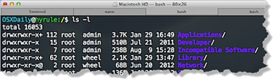
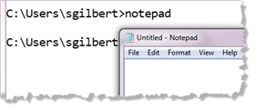
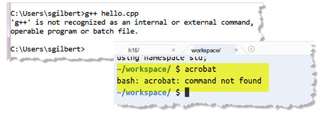

The Command Line
The command processor accepts an instruction (in text form), interprets it, and then converts the request into the internal system calls needed to carry out the action. Shell commands list the files in a directory or copy, move and delete files.

The commands are often different for different shells. In Windows, you list files in the directory with the dir command, while in Linux and on the Mac, you use the ls command.

The most common shell command is to launch a program. Simply to type the name of the program into the shell, at the command prompt, like the picture shown here.
On Windows, when you type this and press ENTER the command-processor first searches a special area of memory (called the executable path), looking for an executable program that matches this pattern. When it finds one (notepad.exe) it launches the program.
If it cannot find the program (because it has not been added to the executable path or because it hasn't been installed on the machine you are running on), the command processor prints an error message. Here is one on Windows and here is one on Unix.

On Windows, the current working directory is always placed in the executable path; on Linux and the Mac it is not; on those platforms, you have to type the current directory (./) before the name of the executable to launch it.
 This course content is offered under a
CC
Attribution Non-Commercial license. Content in this course
can be considered under this license unless otherwise noted.
This course content is offered under a
CC
Attribution Non-Commercial license. Content in this course
can be considered under this license unless otherwise noted.